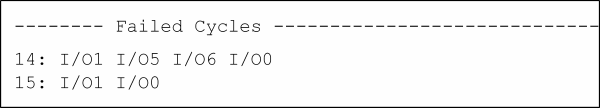
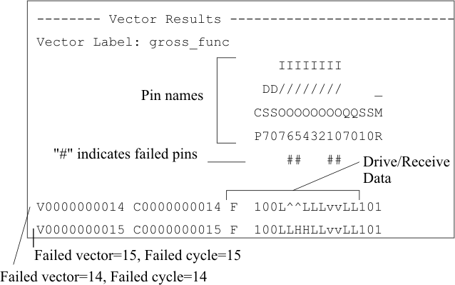

Logging Failed Cycle/Vector for functional test
The TEST API for functional can log the first failing vector (FFV) and first failing cycle (FFC) information. For enabling the FFV, see Selecting the Items to be Output. For enabling the FFC, enable the FFV and set the testsuite flag ffv_enable to "off".
FFC output the first failing cycle data as shown below when it is enabled:

In the figure below, the first two failed cycles are data logged, numbers (14 and15) mean the failed cycle numbers and strings (I/O1, I/O1, I/O5, I/O6) mean the failed pin names.
FFV output the first failing cycle data as shown below when it is enabled:

In the figure above, the first two failed cycles and vectors are data logged, and I/O0, I/O1, I/O5 and I/O6 are failed. For drive/receive data expressions, see the following table.
State |
Drive |
Receive |
Low |
0 (tri-state off) z (tri-state on) |
L (pass) v (fail) |
High |
1 (tri-state off) Z (tri-state on) |
H (pass) ^ (fail) |
Midband or intermediate |
N.A. |
M (pass) - (fail) |
Unstable |
N.A. |
U (pass) ~ (fail) |
Received unspecified data |
N.A. |
# (fail) |
The Report Dialog window also provides the FFV page which selects pins and specifies number of first failed cycles and so on for FFV. For details, see the Event Data Logging manual.